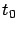
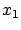
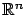
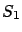
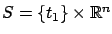
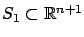
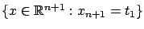
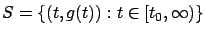

Next: 3.4 Variational approach to
Up: 3.3 Optimal control problem
Previous: 3.3.2 Cost functional
Contents
Index
3.3.3 Target set
As we noted before, the cost functional (3.21) depends on the choice
of

,  , and
, and  . We take the initial time
and the initial state
to be fixed as part of the control
system (3.18). We now need to explain how to define
the final time
(which in turn determines
the corresponding final state
. We take the initial time
and the initial state
to be fixed as part of the control
system (3.18). We now need to explain how to define
the final time
(which in turn determines
the corresponding final state  ). Depending on the control
objective, the final time and final state can
be free or fixed, or can belong to some set. All these
possibilities are captured by introducing a target set
). Depending on the control
objective, the final time and final state can
be free or fixed, or can belong to some set. All these
possibilities are captured by introducing a target set
 and letting
be the smallest time such that
and letting
be the smallest time such that
 . It is clear that
defined in this way
in general depends on the choice of the control
. It is clear that
defined in this way
in general depends on the choice of the control  . We will take
. We will take  to
be a closed set; hence,
if
to
be a closed set; hence,
if  ever enters
, the time
is well defined. If a trajectory
is such that
does not belong to
for any
ever enters
, the time
is well defined. If a trajectory
is such that
does not belong to
for any  , then we consider
its cost as being infinite (or undefined). Note that here we do not allow the option
that
, then we consider
its cost as being infinite (or undefined). Note that here we do not allow the option
that
 may give a valid finite cost, although we will
study such ``infinite-horizon" problems later (in
Chapters 5 and 6).
Below are some examples of target sets that we will
encounter in the sequel.
may give a valid finite cost, although we will
study such ``infinite-horizon" problems later (in
Chapters 5 and 6).
Below are some examples of target sets that we will
encounter in the sequel.
The target set
 , where
, where

is
a fixed point in

,
gives a free-time, fixed-endpoint problem. A generalization of this
is to consider a target set of the form
 , where
, where 
is a surface
(manifold) in
.
Another natural target set is

, where  is a fixed time in
is a fixed time in
 ; this
gives a fixed-time, free-endpoint problem.
It is useful to observe that if we
start with a fixed-time, free-endpoint problem and consider again the
auxiliary state
; this
gives a fixed-time, free-endpoint problem.
It is useful to observe that if we
start with a fixed-time, free-endpoint problem and consider again the
auxiliary state
 , we recover the previous case with
, we recover the previous case with

given by

.
A target set
 , where
, where
 is some subset of
and
is some surface in
,
includes as special cases all the target sets mentioned above. It also
includes target sets of the form
is some subset of
and
is some surface in
,
includes as special cases all the target sets mentioned above. It also
includes target sets of the form
 , which corresponds to
the most restrictive case of a
fixed-time, fixed-endpoint problem. As the opposite extreme, we can have
, which corresponds to
the most restrictive case of a
fixed-time, fixed-endpoint problem. As the opposite extreme, we can have
 , i.e., a free-time, free-endpoint problem.
(The reader may wonder about the sensibility of this latter problem formulation:
when will the motion stop, or why would it even begin in the first place?
To answer these questions, we have to keep in mind that the control objective is to
minimize the cost (3.21). In the case of the Mayer problem, for example,
, i.e., a free-time, free-endpoint problem.
(The reader may wonder about the sensibility of this latter problem formulation:
when will the motion stop, or why would it even begin in the first place?
To answer these questions, we have to keep in mind that the control objective is to
minimize the cost (3.21). In the case of the Mayer problem, for example,
 will be a point where the terminal cost is minimized,
and if this minimum is unique then we do not
need to
specify a target set a priori. In the presence of a running cost
will be a point where the terminal cost is minimized,
and if this minimum is unique then we do not
need to
specify a target set a priori. In the presence of a running cost  taking both positive and negative values, it is clear that remaining
at rest at the initial state
may not be optimal--and we also know that we can always bring
such a problem
to the Mayer form. When one says ``cost" one may often think of it
implicitly as a positive quantity, but remember that this need not be the case;
we may be making a ``profit" instead.)
Many other target sets can be envisioned. For example,
taking both positive and negative values, it is clear that remaining
at rest at the initial state
may not be optimal--and we also know that we can always bring
such a problem
to the Mayer form. When one says ``cost" one may often think of it
implicitly as a positive quantity, but remember that this need not be the case;
we may be making a ``profit" instead.)
Many other target sets can be envisioned. For example,

for some continuous function
 corresponds to hitting a moving target. A point target
can be generalized to a set by making
corresponds to hitting a moving target. A point target
can be generalized to a set by making  set-valued. The familiar trick
of incorporating
time as an extra state variable allows us to reduce such target sets to
the ones we already discussed, and so we will not specifically consider them.
set-valued. The familiar trick
of incorporating
time as an extra state variable allows us to reduce such target sets to
the ones we already discussed, and so we will not specifically consider them.
We now have a refined formulation of the optimal control problem: given a control
system (3.18) satisfying the
assumptions of Section 3.3.1, a cost functional
given by (3.21),
and a target set
, find a
control  that minimizes the cost. Unlike in calculus of variations, we will usually interpret optimality in the global
sense. (The necessary conditions for optimality furnished by the maximum principle
apply to locally optimal controls as well, provided that we work with
an appropriate norm; see Section 4.3 for details.)
that minimizes the cost. Unlike in calculus of variations, we will usually interpret optimality in the global
sense. (The necessary conditions for optimality furnished by the maximum principle
apply to locally optimal controls as well, provided that we work with
an appropriate norm; see Section 4.3 for details.)
Next: 3.4 Variational approach to
Up: 3.3 Optimal control problem
Previous: 3.3.2 Cost functional
Contents
Index
Daniel
2010-12-20